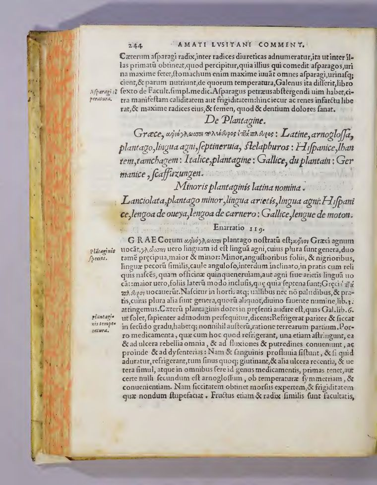

De materia medica
Landmark workof Anazarbus, composed c. 50–70 CE. Five books in Greek covering some six hundred plants, animals, and minerals — the backbone of European and Near-Eastern pharmacy for over fifteen centuries. The library holds it not as one book but as a tradition: translations, commentaries, and (planned) manuscript witnesses, all addressable by the same passage scheme.
Versions in this library
Each card is one version of the work — a witness, edition, translation, or commentary. Greyed cards show how the hub scales as more of the tradition is ingested.


Compare
I.64 σμύρνα myrrh · aligned passageThe same passage of the work, shown in any two held versions side by side. Pick a version in either column; the anchor stays fixed while the witness changes.
Design note — how comparison generalizes
Every version stores a mapping from work-level passage anchors (dsc.1.64) to its own
page + region coordinates. The compare view is therefore witness-agnostic: any two versions with a mapping
for the current anchor can occupy the two columns, and the translation layer attaches to the anchor itself.
The same mechanism drives the rest of the corpus: EB01 papyrus columns ↔ EB02 Joachim pages, E45/E51 copy collation of the Grant Herbier, and the three sister copies of the Yale Italian herbal (E23/E52/E53). Ingesting the Vienna Dioscurides adds a column option here with zero new UI.
- Anchor granularity: chapter-level today; sentence-level alignment would enable cross-witness hover.
- Commentary versions (Amatus) mix quoted text with new prose — the anchor maps to the quoted chapter, and the enarratio surfaces as an "on this page" layer rather than a compare column of its own?